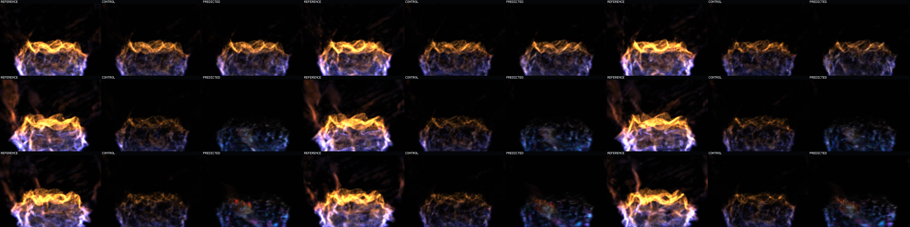
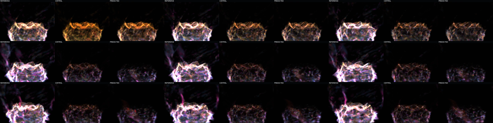

Question: If canonical candidate state and occupancy are protected from predicted appearance, does the long continuation remain coherent?
Support answer: yes. Occupancy feedback is disabled and predicted support IoU beats identity on every one of 63 recurrent steps.
Appearance answer: no. The recurrent nine-channel splat state loses to copied-current control in every motion-bearing cohort and visibly drains from the orange flame sheet into a dim blue/cyan attractor.
Every frame: left = exact held-out target, middle = copied-current control, right = protected-support recurrent appearance. This is one continuous rollout, not 63 independent one-step predictions.
Watch the right-hand role retain a populated basin envelope while its hot orange upper sheet weakens, cools, and breaks into isolated residuals. The middle copied control is imperfect, but remains more reference-like in state and visible energy.
Same state and cadence with display-only colors: green Q1/Q2, yellow Q3, red Q4, blue transported, magenta birth. The growing cyan/magenta support is real canonical occupancy output; the mix itself does not mutate model state.
Support: all 63 steps beat identity IoU; minimum ratio 1.0335x. Final support is 93,365 predicted versus 70,612 exact, exposing a separate 1.3222x occupancy-count inflation.
Appearance state-MSE ratio versus copied control: Q3 1.8994x, Q4 1.7548x, transported 2.2684x, birth 2.1330x. Predicted energy retention is lower than control in all four cohorts: 0.1859 vs 0.2276, 0.1545 vs 0.1871, 0.1112 vs 0.1481, and 0.1149 vs 0.1442.
This is one ordered contact sheet, not unrelated alternatives. Top row contains chronological video frames 0, 1, 2; middle row frames 30, 31, 32; bottom row frames 60, 61, 62. Within every tile: left = reference, middle = copied control, right = protected-support recurrent prediction.

Identical chronology and role layout under the display-only 0.625 cohort mix. The late prediction remains spatially occupied but is dominated by cool transported/birth support and sparse hot residuals, distinguishing appearance collapse from a blank or missing-support failure.

Protected mode holds canonical candidate state separate from recurrent appearance, advances support and donor identity through the frozen occupancy-only route, gathers prior appearance along the exact canonical donor displacement, applies only nine non-position splat residuals, and never feeds those values back into occupancy.
This proves that occupancy poisoning was not the only collapse mechanism. It does not prove analytical-raymarch image error or a training remedy. The useful signal is still the separate one-step result; this artifact says an uncorrected free-running appearance head cannot yet convert that signal into long continuation.